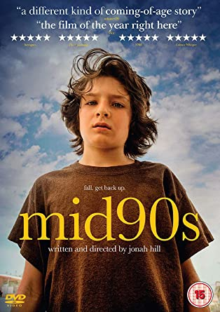
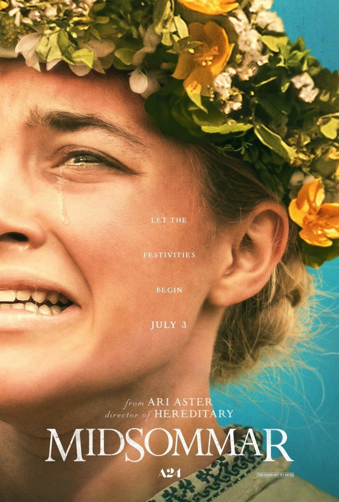
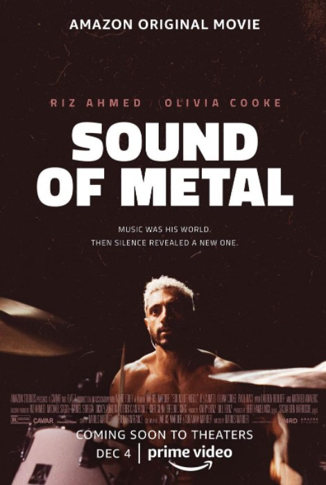

Reviews
MID 90S
El despertar hormonal, la rebeldía adolescencia, el acercamiento a un mundo más amargo y las consecuencias de los dramas domésticos son algunos de los temas que Mid 90s aborda sutilmente a lo largo de uno esos veranos que cambian una vida. El ingenio de los diálogos y el carisma del reparto juvenil generan una sucesión de momentos divertidos y reconocibles que eran de esperar, pero la sorpresa llega cuando la melancolía (la misma que en El club de los cinco revelaba por primera vez en la historia la cultura popular la realidad de la agonía adolescente) aparece en el viaje de descubrimiento del joven Stevie en forma de los fantasmas familiares y sociales.
La ecléctica composición de Trent Reznor y Atticus Ross (miembros de la banda de rock Nine Inch Nails y ganadores del Oscar por su banda sonora para La red social) y la selección musical llena de temazos de la época insufla de energía a una película que respira autenticidad en cada fotograma. Su carácter local e intimista (más cerca de la melancolía que de la nostalgia mal entendida) y su huida de convenciones y narrativas clásicas dificultará su venta internacional, pero Mid 90s es, sin dudas, la presentación en sociedad de un autor con muchas cosas que decir. ¿Dejaremos de subestimar algún día a Jonah Hill?
Midsommar
Resulta ser una película que juguetea con las convenciones de una película de terror a la vez que parece disfrutar frustrando las expectativas de quien vaya a verla creyendo que puede anticiparse a las intenciones de Aster. No porque la película plantee giros radicales a las convenciones del folk horror o incluso de las películas de jóvenes guapos y civilizados vs. monstruos rurales / cabrones del campo, sino por la forma plácida, anticlimática que tiene de discurrir la acción.
Una forma que le debe algo al estilo de 'Hereditary' en su tratamiento del tiempo, a esa elasticidad viscosa propia de una pesadilla. Pero también funciona como reverencia a la atmósfera opresiva de la inevitable 'El hombre de mimbre', donde los primeros pasos que da el sargento Howie en la isla de Summerisle son, de partida, fangosos e inestables, y también el arranque de un tobogán directo a la desconexión total con el mundo civilizado.
Sound of Metal
Tenemos a un par de personajes genéricos, dos clichés con patas rodeados de circunstancias dadas. Casi como el problema del protagonista. No los conocemos, solo sabemos cómo manejan su rutina a través de montajes tan trillados como ellos mismos. Nunca queda claro el éxito o la popularidad en la que se mueven, aunque el nivel de su vida sedentaria en realidad deje claro que al menos uno de los dos es hijo de papá. Lo más rockero y real que verás en la película.
Ruben y Lou forman un dúo de rock en plena gira alrededor de los Estados Unidos. Todo parece ir bien hasta que una noche, el batería recibe la noticia de que pronto quedará sordo. Angustiado y enfrentándose a sus viejos demonios, Ruben tendrá que tomar una decisión que cambiará su vida para siempre. Sí, un esquema básico. El ABC del drama de superación, vamos. El problema es que Riz Ahmed y Olivia Cooke no tienen ningún peso en una trama que avanza a ritmo de golpe sordo.
En realidad la música poco importa aquí. Pocas veces una película sobre músicos ha empezado con una canción tan poco memorable. El protagonista podría trabajar en una fábrica y estar expuesto a un riesgo similar. Perder la capacidad auditiva a esa edad es una putada, seas músico o pastelero. Como drama ambientado en la escena musical no tiene más potencia que como historia de joven rehabilitado (porque él lo dice, no porque lo veamos o podamos entenderlo) que tropieza con una otra piedra en el camino.
La película llega a su mejor momento a mitad de camino. La estancia del protagonista en una comunidad para personas sordas con antecedentes de consumo de estupefacientes. Este componente es el más atractivo de una película con un ritmo lento que el género musical que marca su imagen. Es ahí donde la historia cobra sentido, en una magnífica escena en un tobogán donde un niño sordo siente las vibraciones que produce el ritmo de la percusión de Ruben, un fantástico Riz Ahmed que defiende un personaje con más sombras que luces.
